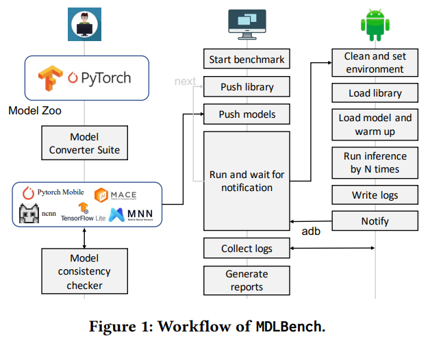
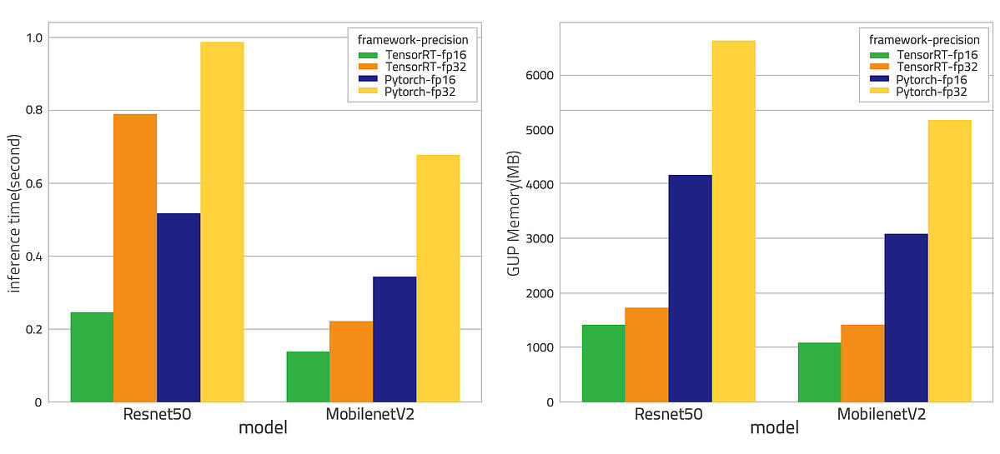
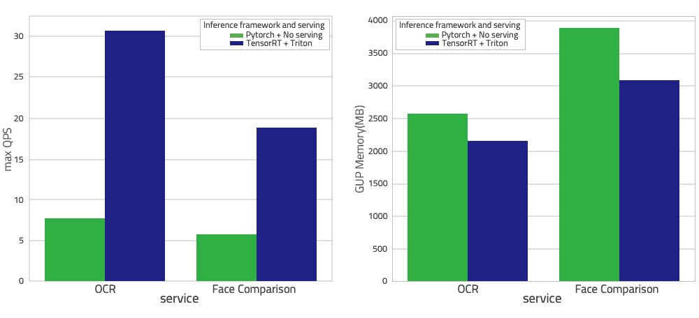
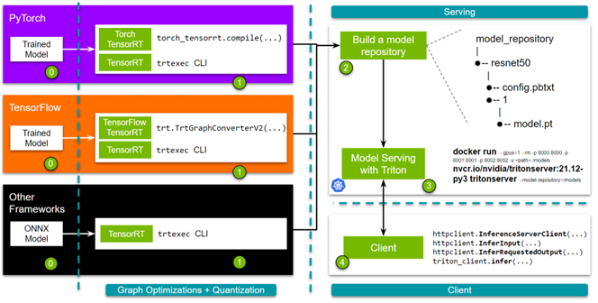
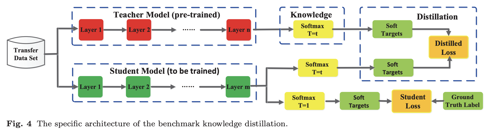

Model Deployment and Compression

1 Model Deployment: TensorRT, Triton, NCNN
Start with Nvidia TensorRT and Triton for deployment on server, then learn NCNN for mobile deployment.
1.1 Why TensorRT?
NVIDIA TensorRT is a deep learning platform that optimizes neural network models and speeds up inference across GPU-accelerated platforms running in the data center and embedded devices.

1.2 Why Triton Server?
Triton enables teams to deploy any AI model from multiple deep learning and machine learning frameworks, including TensorRT, TensorFlow, PyTorch, ONNX.

1.3 TensorRT+Triton Workflow

1.4 NCNN Workflow
2 Model Compression: Pruning, Distillation, Quantization, Sparsity, NAS
Start with pruning. Choose any other method depending on (1) task requirements and (2) hardware.
2.1 Pruning
Good generalization.
Check out an Microsoft Pytorch-based tool: Neural Network Intelligence (NNI).
2.2 Distillation
A large model T teaches a small model S and transfer S’s knowledge. Distillation is suitable for complicated tasks and small models.
It can be classified by different methods:
- Response-based
- Feature-based
- Relation-based
or different strategies:
- online distillation
- offline distillation
- self distillation
or different distillation algorithms:
- adversarial distillation
- multi-teacher distillation
- cross-modal distillation
- graph-based distillation
- attention-based distillation
- data-free distillation
- quatized Distillation
- lifelong distillation
- nas distillation

2.3 Quantization
High requirements for specific hardware, e.g., Intel cpu.
Check out an Microsoft Pytorch-based tool: Neural Network Intelligence (NNI).
2.4 Sparsity
You can make some tensors to be 0, but depends on specific hardwares, e.g., 30xx GPU. Check out an Nvidia Pytorch-based tool: Automated SParsity (ASP).
2.5 Neural Architecture Search (NAS)
You can modify the DARTS model space and tasks to deploy NAS, mostly for models like MobileNet series. For example, you can use NAS to search the backbone, channel, depth, kernel size, resolution and other hyperparams of the model, but NAS requires super computing power because of the large searching space. This requirement welcomes big companies like Google and Facebook, but stops small labs and companies from NAS’s research. Check out an Microsoft Pytorch-based tool: Neural Network Intelligence (NNI).
3 Reference
- Accelerating AI/Deep learning models using tensorRT & triton inference
- Optimizing and Serving Models with NVIDIA TensorRT and NVIDIA Triton
- A Comprehensive Benchmark of Deep Learning Libraries on Mobile Devices (WWW 2022)
- 训练好的深度学习模型是怎么部署的？ 边缘计算 | 在移动设备上部署深度学习模型的思路与注意点 老潘的AI部署以及工业落地学习之路
- 在实际工程应用中,剪枝, 蒸馏等模型压缩方法中的具体哪个算法部署简单且有效?
- mobilev2-yolov5s剪枝、蒸馏，支持ncnn，tensorRT部署。ultra-light but better performence！
- [ICLR 2020] Contrastive Representation Distillation (CRD), and benchmark of recent knowledge distillation methods
- 2022 年神经架构搜索的发展状况如何?
- Benchmarking Triton (TensorRT) Inference Server for Transformer Models
- https://www.reddit.com/r/MachineLearning/comments/i3knzb/d_what_pytorchs_model_serving_framework_are_you/
- How to Accelerate HuggingFace Throughput by 193%
- Hugging Face Transformer Inference Under 1 Millisecond Latency